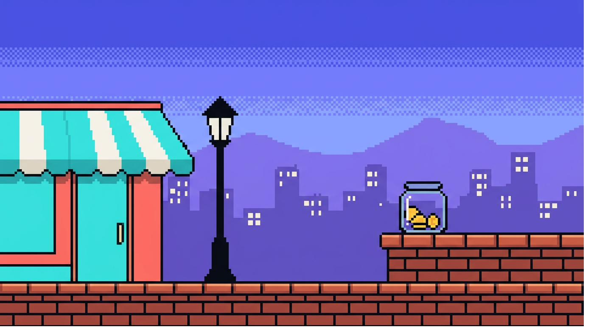
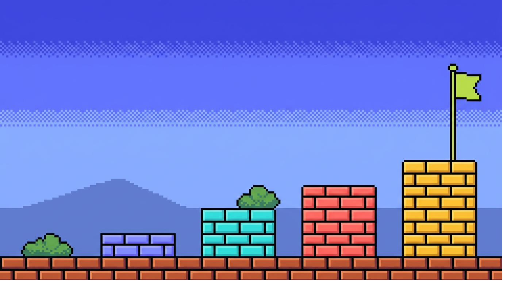
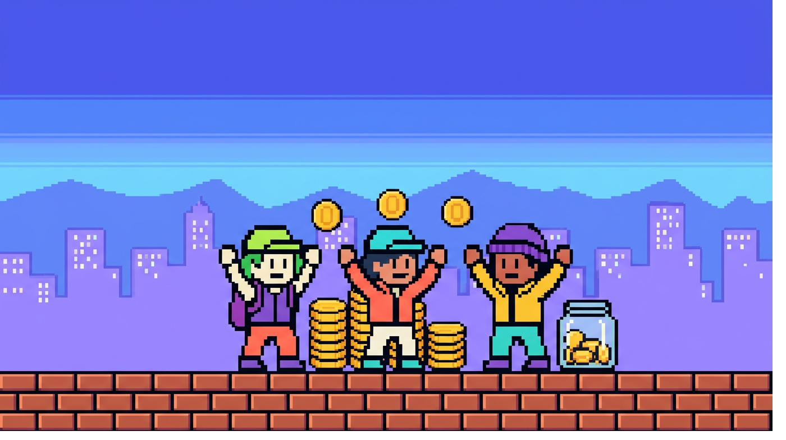
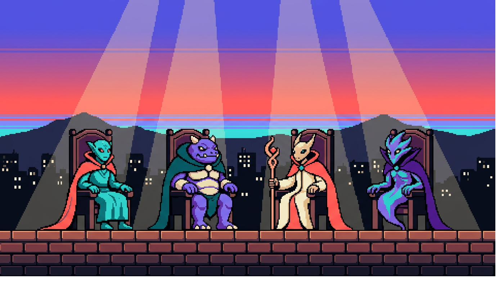
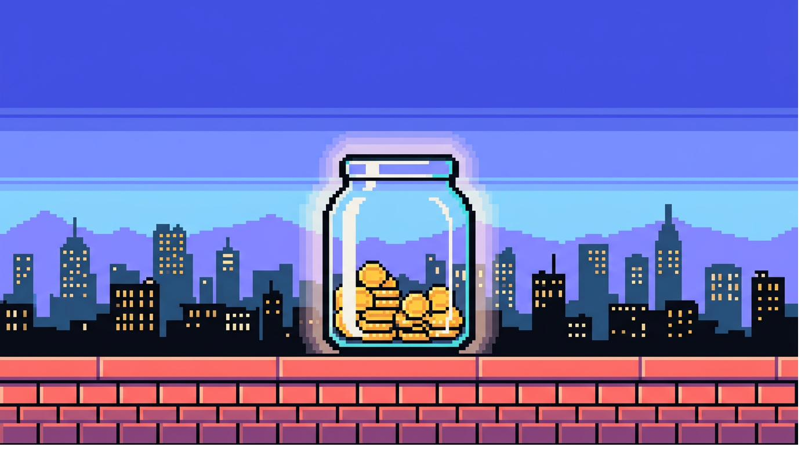
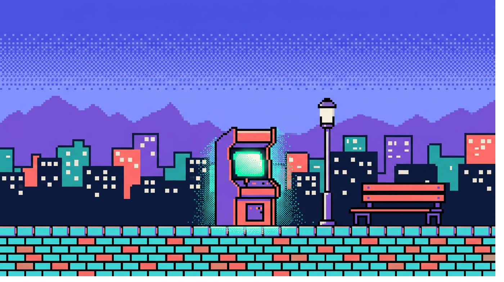
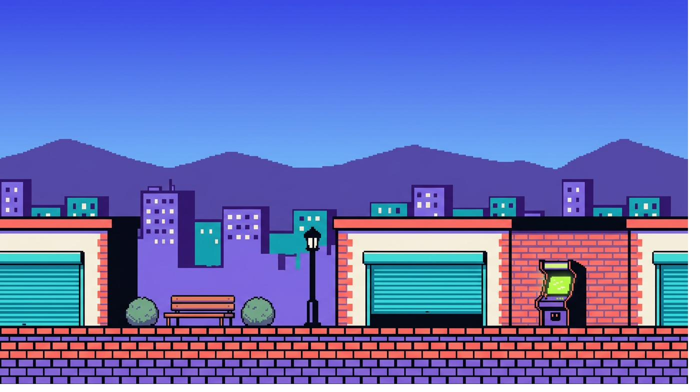

CONGRATULATIONS!
COINS COLLECTED THIS RUN: 0

GOLD COINS ARE HIDDEN ON EVERY SCREEN.
You get 15 seconds per screen to tap them for +10 each. Scroll back to an earlier screen and you lose what you've collected — no continues.
TNP Perfect Pitch is a Shark Tank–style pitch competition, open to every TNP India employee. Bring an idea — a product, a service, a process fix, anything — and pitch it live to a panel of external judges: five minutes to make your case, followed by a round of investor-style questions. No department gatekeeps a good idea here. If you have one, this is where you bring it.

Register solo, or bring up to two teammates along.
Submit your Pitch.
Five minutes on the stage. Present your best pitch.
Straight into questions from the judges. This is where coins are won.

Teams of 1 to 3 are welcome — solo runs count too. Cross-department squads are actively encouraged; the best ideas at TNP rarely sit inside one department. Every TNP India employee is eligible.

Five to seven minutes of investor-style questioning, straight after your pitch. This is where coins are won.
Composure is scored as heavily as content. How you handle the round counts.
FOUR JUDGES. NONE OF THEM WORK HERE.
Who buys this, and why now rather than later?
What does it cost to build, and what does it return?
Why this, and why not the obvious alternative?
Who builds it, on what timeline, and what breaks first?

Every judge scores your pitch out of 50, across five categories — four judges, 200 points in total. That's 70% of your Final Score. The other 30% comes from The Vault: the coins each Boss drops into your jar once your Boss round ends. A full jar means the room is convinced; a thin one means the numbers still need work.

You do not need an idea/team to register now.
PLAY PERFECT PITCHOpens the registration form in a new tab.
